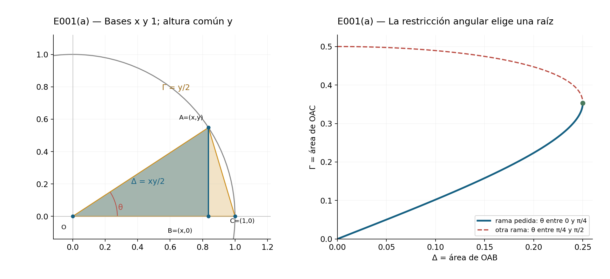
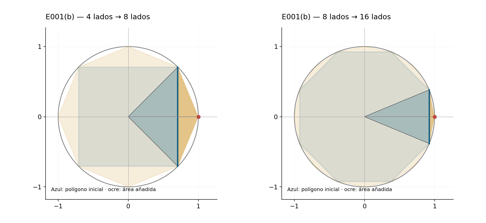
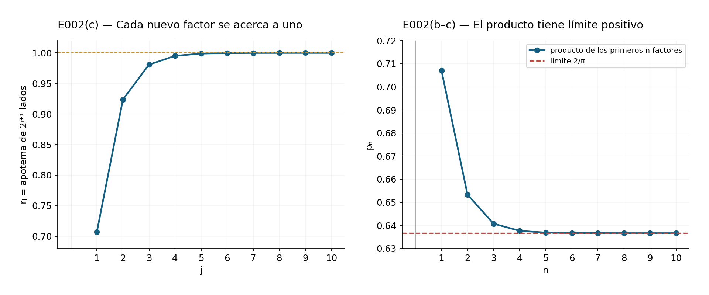
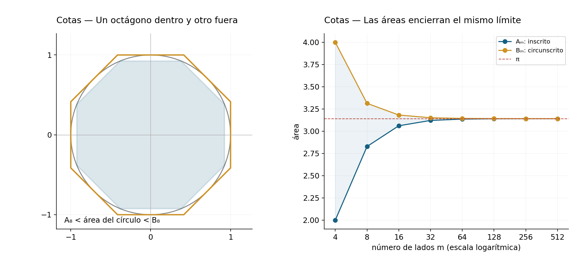

Capítulo 16 — π es irracional
Solucionario explicado de Michael Spivak, Calculus, cuarta edición. Los dos problemas del capítulo se encuentran en pp. 327–329 / PDF 347–349 y contienen cinco incisos. No hay apéndice de ejercicios. El capítulo completo está marcado con estrella en el libro; sus dos problemas no llevan estrellas individuales.
Los ejercicios estudian cómo aproximar el área del círculo mediante polígonos y cómo expresar ese límite mediante raíces cuadradas. La demostración de irracionalidad desarrollada en el cuerpo del capítulo prueba una afirmación distinta: ninguna fracción representa exactamente \(\pi\); de hecho, prueba que \(\pi^2\) también es irracional. Una sucesión de aproximaciones cada vez mejores no basta para establecer esa imposibilidad. Por eso distinguiremos en las soluciones la igualdad geométrica finita, el paso al límite y la estimación del error.
Todos los ángulos se miden en radianes y el círculo tiene radio uno. Denotaremos por \(P_m\) un polígono regular inscrito de \(m\ge3\) lados, por \(A_m\) su área y por \(\alpha_m\) su apotema. La orientación del polígono no modifica ninguna de estas cantidades. Las figuras originales se acompañan de sus archivos vectoriales y scripts de reproducción.
E001 — Duplicación del número de lados
Fuente: pp. 327–328 / PDF 347–348.
(a) SPV4-C16-E001-a
Sean \(O=(0,0)\), \(A=(x,y)\) un punto del círculo en el primer cuadrante, \(B=(x,0)\) y \(C=(1,0)\). Suponemos \(0\le\theta=\angle AOB\le\pi/4\), de modo que \(0\le y\le x\). Se pide expresar el área de \(OAC\) en función de la de \(OAB\).
Pongamos \(\Delta=\operatorname{area}(OAB)\) y \(\Gamma=\operatorname{area}(OAC)\). Las dos áreas comparten altura \(y\), pero tienen bases \(x\) y \(1\): \[\Delta=\frac{xy}{2},\qquad \Gamma=\frac y2.\] El punto \(A\) pertenece al círculo, así que \(x^2+y^2=1\). Al eliminar \(x\), obtenemos \[4\Delta^2=x^2y^2=(1-y^2)y^2.\] Esta ecuación es cuadrática en \(z=y^2\): \[z^2-z+4\Delta^2=0,\qquad z=\frac{1\pm\sqrt{1-16\Delta^2}}2.\] La restricción angular decide cuál de las raíces corresponde al dibujo. Como \(y\le x\) y \(x^2+y^2=1\), necesariamente \(y^2\le1/2\); elegimos la raíz menor. Además \(y\ge0\), por lo que \[\boxed{\Gamma=\frac12\sqrt{\frac{1-\sqrt{1-16\Delta^2}}2}}.\] El radicando interior es no negativo: \(xy\le(x^2+y^2)/2=1/2\) implica \(0\le\Delta\le1/4\). En el extremo \(\theta=\pi/4\) las dos raíces coinciden y \(\Gamma=\sqrt2/4\); en \(\theta=0\) ambos triángulos son degenerados y sus áreas son cero. Se incluyen así los dos extremos permitidos.
La raíz mayor tiene una interpretación concreta. Si se quitara la restricción y se tomara \(\pi/4<\theta<\pi/2\), entonces \(y^2>1/2\) y sería esa otra raíz la correcta. El área \(\Delta\) por sí sola no distingue el ángulo \(\theta\) de su complementario.

(b) SPV4-C16-E001-b
Para duplicar los lados, se añaden los puntos medios de los arcos entre vértices consecutivos. Se pide demostrar la recurrencia \[\boxed{A_{2m}=\frac m2\sqrt{2-2\sqrt{1-\left(\frac{2A_m}{m}\right)^2}}}.\] La fórmula con esos signos vale para \(m\ge4\). El enunciado no escribe esa restricción, pero se necesita para usar la rama angular de (a).
Consideremos un lado de \(P_m\) cuyos extremos sean \(A=(x,y)\) y \(A'=(x,-y)\), con \(C=(1,0)\) en el punto medio del arco correspondiente y \(B=(x,0)\) en el punto medio del lado. El triángulo central \(OAA'\) tiene área \(xy=2\Delta\), y hay \(m\) triángulos congruentes de este tipo. Por tanto \[A_m=2m\Delta.\] En \(P_{2m}\), los nuevos lados de ese mismo sector son \(AC\) y \(CA'\). Los dos triángulos \(OAC\) y \(OCA'\) tienen área \(\Gamma\) cada uno, y entre todos los sectores hay \(2m\) de ellos. Así, \[A_{2m}=2m\Gamma.\] El ángulo \(\angle AOB\) es \(\pi/m\); si \(m\ge4\), no supera \(\pi/4\) y podemos aplicar (a). Sustituyendo \(\Delta=A_m/(2m)\), \[\begin{aligned} A_{2m} &=m\sqrt{\frac{1-\sqrt{1-16[A_m/(2m)]^2}}2}\\ &=\frac m2\sqrt{2-2\sqrt{1-(2A_m/m)^2}}. \end{aligned}\] El factor \(m/2\) procede del número de triángulos y de la raíz del denominador dos; perderlo alteraría incluso el paso inicial del cuadrado al octágono.
Como control geométrico independiente, un triángulo central tiene dos lados unitarios y ángulo \(2\pi/m\), luego \[A_m=\frac m2\sin\frac{2\pi}{m},\qquad A_{2m}=m\sin\frac\pi m.\] Para \(m\ge4\), el coseno de \(2\pi/m\) es no negativo. La fórmula del ángulo medio reproduce exactamente la recurrencia anterior.
El caso del triángulo. Cuando \(m=3\), el ángulo \(\pi/m\) es mayor que \(\pi/4\): debe usarse la raíz mayor de (a). En ese caso, \[A_6=\frac32\sqrt{2+2\sqrt{1-(2A_3/3)^2}}=\frac{3\sqrt3}{2}, \qquad A_3=\frac{3\sqrt3}{4}.\] La fórmula impresa con la raíz menor daría \(3/2\), que no es el área del hexágono regular unitario. Esto muestra por qué la restricción no es solo una formalidad. La iteración solicitada desde \(A_4=2\) queda enteramente dentro del dominio válido: \[A_8=2\sqrt2,\qquad A_{16}=4\sqrt{2-\sqrt2}.\]

Para justificar que el procedimiento aproxima \(\pi\), basta la fórmula trigonométrica del área y el límite fundamental de C15: \[A_m=\pi\,\frac{\sin(2\pi/m)}{2\pi/m}\longrightarrow\pi.\] En la sucesión obtenida duplicando lados, la inclusión \(P_m\subset P_{2m}\) es estricta en regiones de área positiva; por ello \(A_m<A_{2m}<\pi\). La convergencia que se remite a C08-E011 queda aquí demostrada directamente con las herramientas disponibles.
La expresión de raíces anidadas tiene una dificultad al calcular con precisión finita: para \(m\) grande, resta de uno un número muy próximo a uno. Una versión algebraicamente equivalente evita esa resta. Si \(u=2A_m/m\), racionalizamos \[1-\sqrt{1-u^2}=\frac{u^2}{1+\sqrt{1-u^2}},\] y obtenemos \[A_{2m}=A_m\sqrt{\frac{2}{1+\sqrt{1-(2A_m/m)^2}}}.\] Es válida en el mismo rango \(m\ge4\) y se usa para las comprobaciones numéricas. La precisión de un cálculo depende también de cómo se evalúa una identidad correcta.
E002 — Apotemas y producto de Viète
Fuente: pp. 328–329 / PDF 348–349.
(a) SPV4-C16-E002-a
Se pide demostrar \(A_m/A_{2m}=\alpha_m\). Retomemos los triángulos del ejercicio anterior. Para todo \(m\ge3\), sus bases y altura son positivas, y \[\frac{\operatorname{area}(OAB)}{\operatorname{area}(OAC)} =\frac{xy/2}{y/2}=x=OB.\] Al multiplicar ambas áreas por el mismo número \(2m\) se obtienen, respectivamente, \(A_m\) y \(A_{2m}\). La distancia del centro al lado \(AA'\) es precisamente \(OB=\alpha_m\). Por tanto, \[\boxed{\frac{A_m}{A_{2m}}=\alpha_m}.\] Aquí no se necesitó seleccionar una raíz cuadrática; la relación vale también para \(m=3\). El triángulo rectángulo \(OAB\), de hipotenusa uno y ángulo \(\pi/m\) en \(O\), da además \[\alpha_m=\cos\frac\pi m.\] Con las fórmulas de áreas, la misma identidad se verifica usando \(\sin2t=2\sin t\cos t\): \[\frac{(m/2)\sin(2\pi/m)}{m\sin(\pi/m)}=\cos\frac\pi m.\]
(b) SPV4-C16-E002-b
Se pide demostrar la identidad finita \[\boxed{\frac2{A_{2^k}}=\alpha_4\alpha_8\cdots\alpha_{2^{k-1}}}.\] Para \(k\ge3\), se multiplican las relaciones de (a) desde \(m=4\) hasta \(m=2^{k-1}\): \[\begin{aligned} \alpha_4\alpha_8\cdots\alpha_{2^{k-1}} &=\frac{A_4}{A_8}\frac{A_8}{A_{16}}\cdots\frac{A_{2^{k-1}}}{A_{2^k}}\\ &=\frac{A_4}{A_{2^k}}=\frac2{A_{2^k}}. \end{aligned}\] Todos los factores de área intermedios se cancelan. Para \(k=2\), el producto no tiene factores: con la convención de producto vacío igual a uno, la fórmula sigue siendo cierta porque \(2/A_4=1\). No se extiende a \(k=1\), donde se hablaría de un polígono de dos lados ajeno a la definición.
Cada apotema está entre cero y uno. Los productos parciales, por tanto, disminuyen, aunque eso por sí solo todavía permitiría que su límite fuera cero. La identidad finita da su valor exacto y elimina esa incertidumbre. Como \(A_{2^k}\to\pi\) y \(\pi>0\), \[\lim_{k\to\infty}\alpha_4\alpha_8\cdots\alpha_{2^{k-1}}=\frac2\pi>0.\] Es el paso al límite de una sucesión de productos finitos; no se están cancelando informalmente cantidades en una expresión infinita.
(c) SPV4-C16-E002-c
Se pide expresar los apotemas de \(P_4,P_8,P_{16},\ldots\) mediante raíces anidadas y deducir el producto de Viète. Como \(\pi/m\) está en el primer cuadrante, la fórmula del ángulo medio usa la raíz positiva: \[\alpha_{2m}=\cos\frac\pi{2m}=\sqrt{\frac{1+\cos(\pi/m)}2} =\sqrt{\frac{1+\alpha_m}2}.\] El valor inicial es \(\alpha_4=\cos(\pi/4)=1/\sqrt2\). Los primeros términos son \[\begin{aligned} \alpha_4&=\sqrt{\frac12},\\ \alpha_8&=\sqrt{\frac12+\frac12\sqrt{\frac12}},\\ \alpha_{16}&=\sqrt{\frac12+\frac12\sqrt{\frac12+\frac12\sqrt{\frac12}}}. \end{aligned}\] Para no depender de puntos suspensivos al definir todos los términos, pongamos \[r_1=\sqrt{\frac12},\qquad r_{j+1}=\sqrt{\frac{1+r_j}{2}}\quad(j\ge1).\] La inducción anterior prueba \(r_j=\alpha_{2^{j+1}}\). Si \(p_n=\prod_{j=1}^n r_j\), el inciso (b), con \(k=n+2\), da \[p_n=\frac2{A_{2^{n+2}}}.\] Al tomar límites, queda demostrado el significado preciso de la fórmula \[\boxed{\frac2\pi= \sqrt{\frac12}\; \sqrt{\frac12+\frac12\sqrt{\frac12}}\; \sqrt{\frac12+\frac12\sqrt{\frac12+\frac12\sqrt{\frac12}}}\;\cdots}.\] Los \(r_j\) crecen hacia uno: si \(0<r_j<1\), entonces \((1+r_j)/2-r_j^2=(1-r_j)(2r_j+1)/2>0\), de donde \(r_j<r_{j+1}<1\). La continuidad en el límite obliga a \(r=\sqrt{(1+r)/2}\) y, como \(r>0\), se obtiene \(r=1\). Este hecho concuerda con que los lados se acercan al círculo, pero la convergencia del producto a un valor positivo se demostró con las áreas.

Cotas explícitas para la aproximación
Esta consecuencia completa la afirmación de que el procedimiento permite aproximar \(\pi\) cuanto se desee; no añade un inciso al inventario. Al prolongar los radios que pasan por los puntos medios de los lados, podemos construir el polígono regular circunscrito de apotema uno. Es homotético a \(P_m\) con razón \(1/\alpha_m\), de modo que su área es \[B_m=\frac{A_m}{\alpha_m^2}=m\tan\frac\pi m.\] El disco queda estrictamente entre los dos polígonos, salvo por sus puntos de contacto: \[A_m<\pi<B_m.\] Estas desigualdades pueden evaluarse usando solo raíces: empiece con \(A_4=2\), \(\alpha_4=\sqrt{1/2}\) y repita \[A_{2m}=\frac{A_m}{\alpha_m},\qquad \alpha_{2m}=\sqrt{\frac{1+\alpha_m}2},\qquad B_m=\frac{A_m}{\alpha_m^2}.\] No se necesita introducir un valor decimal previo de \(\pi\) para construir las cotas. Puesto que \(A_m\to\pi\) y \(\alpha_m\to1\), la diferencia \(B_m-A_m\) tiende a cero. Dada una tolerancia \(\varepsilon>0\), basta continuar hasta \(B_m-A_m<\varepsilon\): cualquier número del intervalo tendrá error menor que \(\varepsilon\). El punto medio tiene error menor que la mitad de la anchura.
| Lados \(m\) | Cota inferior decimal | Cota superior decimal |
|---|---|---|
| 4 | 2.000000 | 4.000000 |
| 8 | 2.828427 | 3.313709 |
| 16 | 3.061467 | 3.182598 |
| 32 | 3.121445 | 3.151725 |
| 64 | 3.136548 | 3.144119 |
| 128 | 3.140331 | 3.142224 |
Los extremos de la tabla se redondean hacia afuera a seis decimales: el inferior hacia abajo y el superior hacia arriba. No son igualdades con las áreas exactas. Por ejemplo, la última fila asegura \(3.140331<\pi<3.142224\). Los cálculos se reproducen con intervalos racionales: cada raíz se encierra entre fracciones cuyos cuadrados se comparan exactamente con el radicando.

Dependencias y alcance de los resultados
Las soluciones usan áreas de triángulos y homotecias, la identidad fundamental y el ángulo medio de C15-E015, la adición del seno y \(\sin t/t\to1\). No se emplean series infinitas, logaritmos ni una teoría general de productos infinitos. La fórmula de E001(b) requiere \(m\ge4\) por la elección de la raíz; las relaciones de apotemas y áreas de E002(a) son válidas para todo \(m\ge3\). El producto se obtiene empezando en el cuadrado.
La convergencia de las áreas justifica el producto y las aproximaciones. La irracionalidad de \(\pi^2\), demostrada en el cuerpo del capítulo, usa además un argumento aritmético de integrales que son enteros y quedan estrictamente entre cero y uno. No se deduce esa irracionalidad del producto de Viète ni de los decimales de la tabla.
Soluciones originales de Alevi Peña · Matemática Abierta. Licencia GFDL 1.3 o posterior.